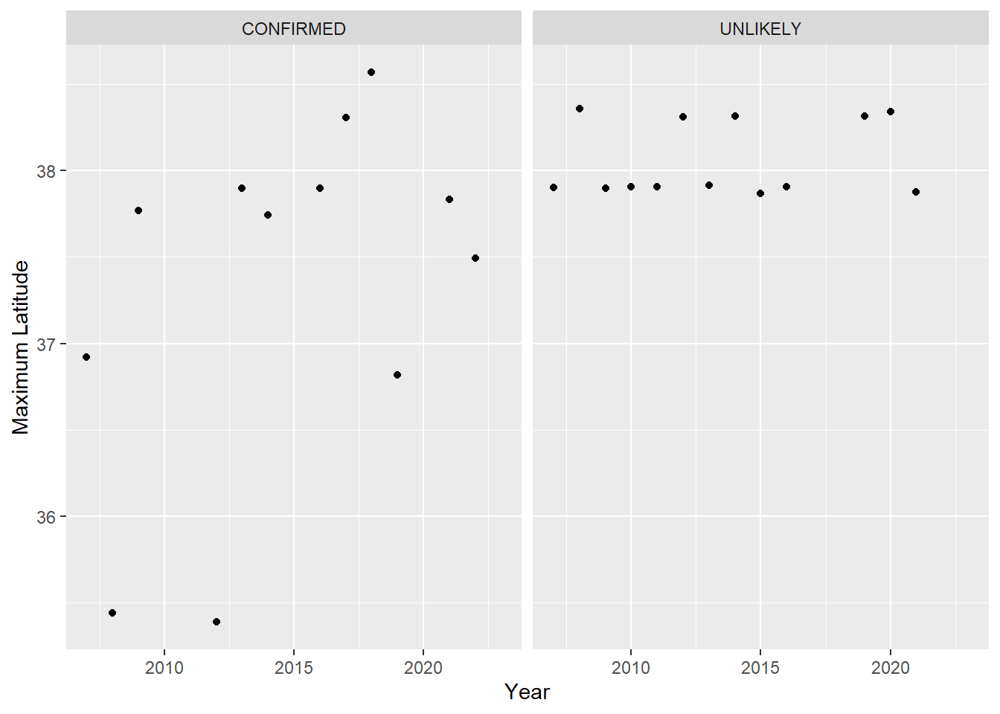

Bottlenose dolphins (Tursiops truncatus) kill harbor porpoises (Phocoena phocoena): evidence from the central California stranding record, 2007-2023.
Authors: William Keener, Marc Webber, Padraig Duignan, Jackson Vanfleet-Brown
Introduction
Harbor porpoise (Phocoena phocoeana) populations in California have grown at rates of approximately 6-10% since 2004, the post-gillnet bycatch period (Forney et al. 2021). Despite this growth, there exist concerns about emerging threats. One such concern is attack by bottlenose dolphins (Tursiops truncatus).
A recognized phenomenon worldwide (e.g. Gross et al. 2020), instances of interspecific aggression were first noted in California at the time of the “unusual mortality event” (UME) of 2007-2009. Wilkin et al. (2012) examined stranded carcasses of harbor porpoises collected during this period and identified blunt force trauma as the most common known cause of death. Injuries in these cases suggested attack by bottlenose dolphins. Cotter et al. (2012) observed attacks in Monterey Bay during this same period, providing further evidence of porpicide. Both authors indicated that these types of attacks peaked in the late summer and fall.
In this study we reviewed the harbor porpoise stranding record in central California from the time of the UME reported by Wilkin et al. (2012) to the present, estimating the probability of porpicide (i.e. attack by bottlenose dolphin) in each case.
Methods
- Stranding network
- range of search area and protocol for reporting and collecting carcasses
- Pathology
- process for necropsy and assessing TME data
- process for estimating probability
- Confirmed Case: Tt rakes + Fractures + Hemorrhage +/- Capture Myopathy
- Probable Case: Fractures + Hemorrhage +/- Capture Myopathy
- Suspect Case: Hemorrhage +/- Capture Myopathy
- Unlikely Case: Sudden death without blunt or sharp force trauma.
Results & Discussion
Interannual variability
The number of cases each year depends on mortality and to a large extent on other factors, such as the probability that carcasses will float to shore and that they will be found. This causes variability year to year in the data set. There is a significant increase in cases coincident with the beginning of the UME in 2008 (Wilkin 2012). This is all shown in Figure 1.
Normalizing for interannual variability, we see that evidence of porpicide was most prevalent among strandings in 2015-2020. This trend appears to have reversed over the past 3 years as depicted in Figure 2.
Seasonal variability
As seen in Figure 3 there is seasonal cycle in strandings. Most occur in the summer. This is consistent with Wilkin et al. (2012) who observed the same patterns in stranding data from 1998-2010.
Porpicide cases appear to peak later in the year, in the late-summer to fall. Figure 4 shows that, normalizing for monthly variability, porpicide cases form the greatest proportion of strandings in July-October.
Spatial extent
The northward range expansion of bottlenose dolphins could drive a higher incidence of porpicide in northern regions through time. An initial look at the spatial data (Figure 5) does not reveal any obvious northward progression in confirmed porpicide cases.
If confirmed cases are compared to unconfirmed cases, a weak northward trend may appear, as shown in Figure 6. The maximum latitude of all confirmed cases in a given year appears to increase through time, particularly if compared to all unlikely cases.

Age/sex of porpicides
References
Cotter, Mark P., Daniela Maldini, and Thomas A. Jefferson. 2012. “‘Porpicide’ in California: Killing of Harbor Porpoises ( Phocoena Phocoena ) by Coastal Bottlenose Dolphins ( Tursiops Truncatus ).” Marine Mammal Science 28 (1). https://doi.org/10.1111/j.1748-7692.2011.00474.x.
Forney, Karin A., Jeffrey E. Moore, Jay Barlow, James V. Carretta, and Scott R. Benson. 2021. “A Multidecadal Bayesian Trend Analysis of Harbor Porpoise (Phocoena Phocoena ) Populations Off California Relative to Past Fishery Bycatch.” Marine Mammal Science 37 (2): 546–60. https://doi.org/10.1111/mms.12764.
Gross, Stephanie, Philip Claus, Peter Wohlsein, Tina Kesselring, Jan Lakemeyer, Anja Reckendorf, Marco Roller, Ralph Tiedemann, and Ursula Siebert. 2020. “Indication of Lethal Interactions Between a Solitary Bottlenose Dolphin (Tursiops Truncatus) and Harbor Porpoises (Phocoena Phocoena) in the German Baltic Sea.” BMC Zoology 5 (1): 12. https://doi.org/10.1186/s40850-020-00061-7.
Wilkin, Sarah. 2012. “An Unusual Mortality Event of Harbor Porpoises (Phocoena Phocoena) Off Central California: Increase in Blunt Trauma Rather Than an Epizootic.” Aquatic Mammals 38 (3): 301–10. https://doi.org/10.1578/AM.38.3.2012.301.